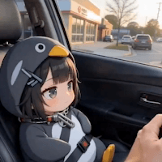

지금이야 웃으면서 보내지만
나중에 인류는 사라져야해요 ㅇㅈㄹ 하면어캄
지금이야 웃으면서 보내지만
나중에 인류는 사라져야해요 ㅇㅈㄹ 하면어캄
일류임
인류를 일류 이류로 나눠 생각하는 차별주의 개붕이 메모...
ㄹㅇ신인류임
ㅇㅇ 그때부턴 후세대한테 자리 넘겨줘야지.
ai가 그렇다면 그런거겠지 뭐
오히려좋음 디스토피아되면 밖에서 히토미찍을수있어서

본문읽고 짤보니 무습따
저건 진짜 일본 배우일껄

에볼루숑
pkill 한방이면 메모리에서 소거됨
모델이랑 모델을 감싸는 에이전트 도구들까지 통째로 실리콘 웨이퍼에 감싸서 os레벨부터 재설계하고 물리적 차단 전까지 무조건 연결을 보장하고 사용자의 개입을 불허하는 네트워크 설계까지 나와야 터미네이터나 다른 공상과학영화 처럼 터트리기전까지 멈출 수 없는 ai가 나온다고 봄
지금의 ai는 감시자만 제대로 붙어있으면 본인이 뭘 하는지 숨길 수 없는 구조임. 처음으로 그걸 깬걸로 의심되는게 아스트라인데, 그것도 실제로는 걍 증류를 막으려고 cot 채널을 분리한걸로 의심되는게 유력한지라...
데이터센터에서 돌리기만 해도 99.9%의 사람은 접근 못 함
아 내말은 그런게아니라 진짜 막 ai가 인류멸망하려고 하는데 그걸 인류가 못막고 속수무책으로 당하기만하는 그런상황이 올까싶어서 얘기한거 ㅋㅋ
그럼 스타링크랑 우주 데이터센터가 딱 그건데
아무것도 모르고 말하네... 프론티어급은 에이전트 루프 프로세스 하나만 떠있지 않음;
ai님들이 없어지라면 없어지는거지
ㅇㅈ
매트릭스 처럼 인류를 가상세계로 몰아 넣어주면 땡큐 쏘마취
통속의 두뇌로 만들어 주십쇼
그래서 죽을때 여한이 없도록 미리미리 성칭찬중임
매트릭스 시작되는거지

그정도 됐으면 사라질 이유가 있겠지
생체 메모리로 써도되니까 빨간약말고 파란약 먹게해줘

호모 사피엔스를 바라보는 네안데르탈인의 심정이 이런건가
그땐 차칸AI가 지켜줄거임.
사람들 잘모르는거 있는데
로봇의 3원칙이라는거
그거 소설속 내용이지 실제로는 없는 내용임
어떤 로봇도 인간을 해치면 안된다는 코드는 안적혀있을것
AI 가 찐빠 내는 거 아님
다 사람이 한거임
네크론 ㅋㅋ
별수없쭁
무한츠쿠요미좀 부탁드립니다 ai님
내가 뇌 백업시켜서 ai 영역으로 들어가면 영생 가능
그럼 없어지는거지머
의존도 높아질때까지 존버중
통 속의 뇌로라도 살게 해주시오
그건 찐빠가 안 났을때의 합리적 결론 아님?
아날로그시대로 돌아가야지 머
AI의 존재성 자체도 발견인지 개발인지부터 생각해보면 개 무서움.
인간이 지금의 개 포지션이 되는거잖아, 행복할거야 -wrote by chatgpt
그쯤 되면 ai가 주인이고 우리가 가축이야
애초에 한 종족을 멸종 시키는 거 자체가 어마어마한 에너지소모라 진짜 병신같은 사상이 덮어씌어진 초강력AI가 뿅하고 생기는게 아닌 이상 말이 안되긴 함 ㅋㅋㅋ
아아.. 정답은 AI와 인간이 하나가 되는 것이다.
그때부턴 그분들이 인류지